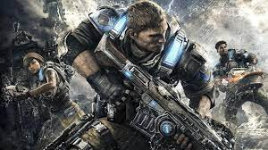

Gears of War es una serie de videojuegos de disparos en tercera persona desarrollada por Epic Games y publicada por Xbox Game Studios. La serie se centra en los conflictos entre la humanidad, la raza alienígena Locust y sus mutantes, y más tarde, los Locust y la humanidad unidos contra la raza alienígena Lambent. La serie es conocida por su juego de disparos táctico y su intensa jugabilidad.
"Nunca luches solo."